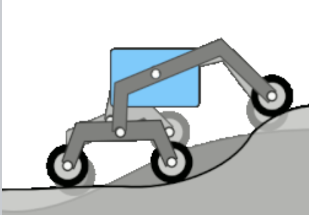
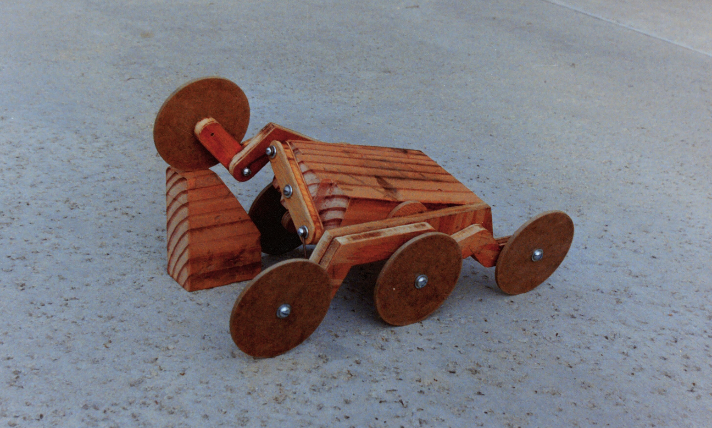
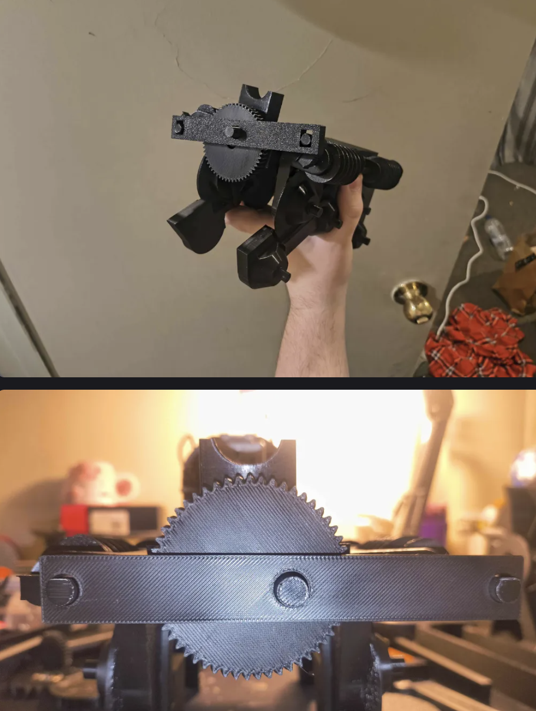
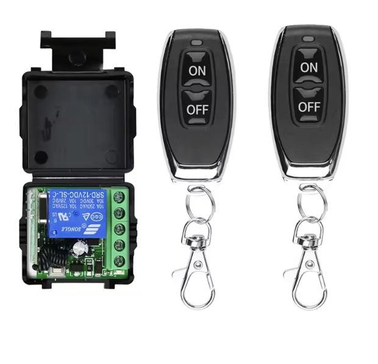
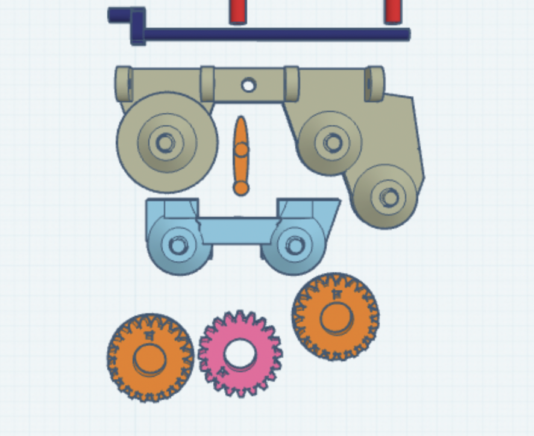
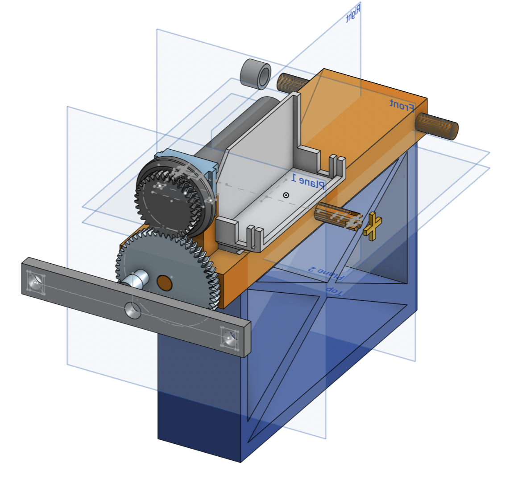
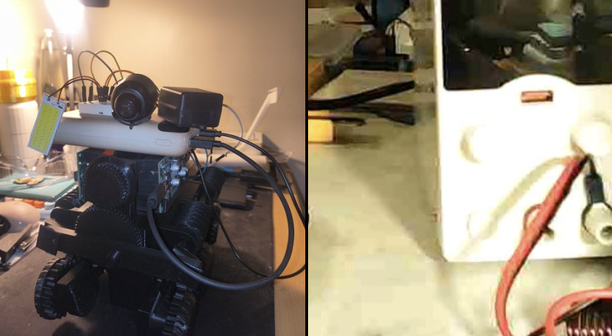

Free AI Website Builder
Rocker-bogie visualization of each side on differing terrain
The rocker-bogie design is an articulated, passively sprung (unsprung) suspension system that uses split rather than full-width axles. It is intended to maintain contact between all six wheels and uneven terrain while distributing wheel loads through mechanical articulation and load averaging
i plan to based this rover off nasa's "Rocker-bogie" wheel system. It seemed to be more practical then printing and modeling a more "tank like" design. and it also allowed for the adaptive wheel system i wanted for stability
plus the looking like Sojourner part is a great bonus

photo of the rocker bogie wheel linkage, clearly showing the cross bar with string leading to each wheel side, source: wiki
There are two important things to mention for what is different about my rocker boogie system
1. motor to wheel, the nasa rover work by having 1 motor for each wheel this allows for both very fine adjustments. this also means that mechanical wheel motion doesn't have to travel through the slightly off rocker bogie wheel linkage, only electrical wires do which can be easily routed. i will have no such luxury of capital and plan to at least initially use a 1 motor system to drive the entire rover. this means i will need to fundamentally redesign a way to pass mechanical power through the rocker bogie's wheel linkage. this will be quite difficult.
2. cross linkage, a typical rocker bogie system has a cross linkage such that if one wheel is lower the opposite wheel is slightly raised. i will have to try to do this in a loose manner or just cut the nice but non essential feature from the system

photo of the rover at this stage showing the cross bar and the worm gear drive system (wheels not yet added)
i decided on using worm gears for the remodeled linkage
i thought about using 90 degree gears, but the troubles that they gave me during the 3d printed belt sander project made me decide against it.
worm gears are perfect here because because:
1. really close to the reducing ratio i need
2. much more slack in the system when it comes to engaging the gears
3. is has a 1 way gear like effect due to it's geometry
meaning that if power is cut the rover doesn't just induce back emf and mess with power system or start just rolling down a hill
i decided to do the driving through 1 large rotating cross bar to rotate each side. my hope was that with a little slack in the vertical direction this could also mimic the original "cross linkage" even if not quite as effective.
this took about 10 test prints to get everything worked out cleanly

image showing the dongle used
i wanted a way to properly control the system without introducing a ardunio control system yet. So i decided to use recent gadget i bought that acts as a simple relay controlled over distance using a nice looking radio dongle like those seen in cars.
as it stands is just a "on/off" system for a motor that only goes one direction (forward). so it is not perfect, but it's good for being able to turn it off before it breaks itself or without risking getting a finger pitched in the gears.

image showing the modeling of the wheel linkage

image showing the modeling of the main body and the repair stand (dark blue)

photo of the rover (left), cropped image of the wifi camera feed (right)
added a camera to the rover system. it works by connecting the camera and a phone to the same wifi network
of course it's not a proper signal like lora or radio because of the need for both sides to have a wifi network. but it's perfect for some quick and cheap testing of the overall system, despite this dependancy.
making great progress and i think i'm gonna have it try to do a 50 or 100 meter test soon and record it all with the camera
should have 6 HOUR runtime
and a 1.35 KM total distance (0.056 m/s)
based on napkin math from the battery and power draw stats
Free AI Website Builder